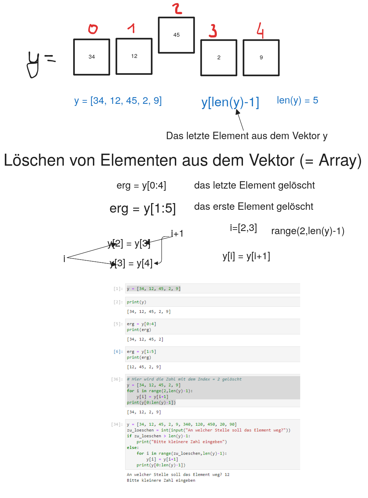
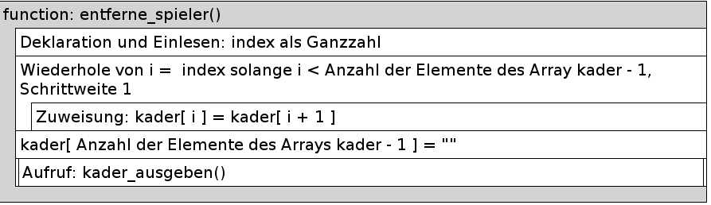

Code
zahlen = [23, 15, 17, 12, 100, 35, 67]
erg = zahlen[0:len(zahlen)-1]
print(erg)[23, 15, 17, 12, 100, 35]
Erstellen Sie einen Zahlenvektor mit den Zahlen [23, 15, 17, 12, 100, 35, 67]
zahlen = [23, 15, 17, 12, 100, 35, 67]
erg = zahlen[0:len(zahlen)-1]
print(erg)[23, 15, 17, 12, 100, 35]zahlen = [23, 15, 17, 12, 100, 35, 67]
erg = zahlen[1:len(zahlen)]
print(erg)[15, 17, 12, 100, 35, 67]zahlen = [23, 15, 17, 12, 100, 35, 67]
for i in range(2,len(zahlen)-1):
zahlen[i] = zahlen[i+1]
erg = zahlen[0:len(zahlen)-2]
print(erg)[23, 15, 12, 100, 35]Die Software des Trainers der Abteilung Volleyball des Sportvereines Mühlberger SC enthält ein Array mit allen Spielernamen des Mannschaftskaders.
kader =[Armin", "Batu", "Kai", "Sven", "Paul", "Milan", "Goran", "Chris", "Nico","Dennis", "Emin", "Luca"]
Mit Hilfe der Software soll es möglich sein, den Spieler an einer bestimmten Stelle des Arrays zu entfernen.
Anwender einzugebenden Stelle, in das Array eingefügt wird.
z. B.: Spieler entfernen an der Stelle mit dem Index: 4 Das Array kader soll danach folgenden Inhalt haben:
kader = ["Armin", "Batu", "Kai", "Sven", "Milan", "Goran", "Chris", "Nico","Dennis", "Emin", "Luca"]
Implementieren Sie eine Funktion entferne_spieler(), mit der ein Spieler aus dem Array entfernt wird.
#Hier den Programmcode eingeben und mit STRG+ENTER ausführen
kader = ["Armin", "Batu", "Kai", "Sven", "Paul", "Milan", "Goran", "Chris","Nico", "Dennis", "Emin", "Luca"]
def kader_ausgeben():
print("------------------------")
print("Kader")
print("------------------------")
for i in range(len(kader)):
print(kader[i])
def entferne_spieler():
index = int(input("Entferne Spieler an der Stelle mit dem Index: "))
#Spieler rücken nach vorne auf
for i in range(index, len(kader)-1):
kader[i] = kader[i+1]
#letztes Element 'leeren'
kader[len(kader)-1] = ""
kader_ausgeben()
#Funktionsaufruf
entferne_spieler()Entferne Spieler an der Stelle mit dem Index: 4------------------------
Kader
------------------------
Armin
Batu
Kai
Sven
Milan
Goran
Chris
Nico
Dennis
Emin
Luca
